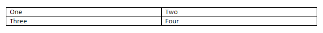

[Table of Contents] [docx version]
WordprocessingML Reference Material - Table of Contents
This element specifies that the parent table cell shall be treated as though it was deleted from the document while revisions were being recorded. This means that although the table cell element exists in the structure of the table, the table cell technically no longer exists in the document.
[Example: Consider a document with a two row by two columns table as follows:

If this table has each cell in its final column deleted and this is tracked as a revision, the resulting WordprocessingML would show each of these cells as deleted as follows:
<w:tbl>
…
<w:tr>
<w:tc>
<w:r>
<w:t>One</w:t>
</w:r>
</w:tc>
<w:tc>
<w:tcPr>
<w:cellDel w:id="0" … />
</w:tcPr>
<w:r>
<w:t>Two</w:t>
</w:r>
</w:tc>
</w:tr>
<w:tr>
<w:tc>
<w:r>
<w:t>Three</w:t>
</w:r>
</w:tc>
<w:tc>
<w:tcPr>
<w:cellDel w:id="1" … />
</w:tcPr>
<w:r>
<w:t>Four</w:t>
</w:r>
</w:tc>
</w:tr>
</w:tbl>
The cellDel elements in the table cell properties of the cells with text Two and Four specify that each of those cells have been deleted from the document. Their attributes (omitted) may optionally provide information about the time at which this deletion took place. end example]
|
Parent Elements |
|
tcPr (§2.7.5.8); tcPr (§2.4.66); tcPr (§2.7.5.9); tcPr (§2.4.67) |
|
Attributes |
Description |
|
author (Annotation Author) |
Specifies the author for an annotation within a WordprocessingML document.
If this attribute is omitted, then no author shall be associated with the parent annotation type.
[Example: Consider a comment represented using the following WordprocessingML fragment:
<w:… w:id="1" w:author="Example Author"> … </w:…>
The author attribute specifies that the author of the current annotation is Example Author, which may be used as desired. end example]
The possible values for this attribute are defined by the ST_String simple type (§2.18.89). |
|
date (Annotation Date) |
Specifies the date information for an annotation within a WordprocessingML document. The use of this information is outside of the scope of this Office Open XML Standard.
If this attribute is omitted, then no date information shall be associated with the parent annotation type.
[Example: Consider a comment represented using the following WordprocessingML fragment:
<w:… w:id="1" w:date="2006-01-01T10:00:00"> … </w:…>
The date attribute specifies that the date of the current annotation is January 1st 2006 at 10:00 AM, which may be used as desired. end example]
The possible values for this attribute are defined by the ST_DateTime simple type (§2.18.15). |
|
id (Annotation Identifier) |
Specifies a unique identifier for an annotation within a WordprocessingML document. The restrictions on the id attribute, if any, are defined by the parent XML element.
If this attribute is omitted, then the document is non-conformant.
[Example: Consider an annotation represented using the following WordprocessingML fragment:
<w:… w:id="1" … > … </w:…>
The id attribute specifies that the ID of the current annotation is 1. This value is used to uniquely identify this annotation within the document content. end example]
The possible values for this attribute are defined by the ST_DecimalNumber simple type (§2.18.16). |
The following XML Schema fragment defines the contents of this element:
<complexType name="CT_TrackChange">
<complexContent>
<extension base="CT_Markup">
<attribute name="author" type="ST_String" use="required"/>
<attribute name="date" type="ST_DateTime" use="optional"/>
</extension>
</complexContent>
</complexType>